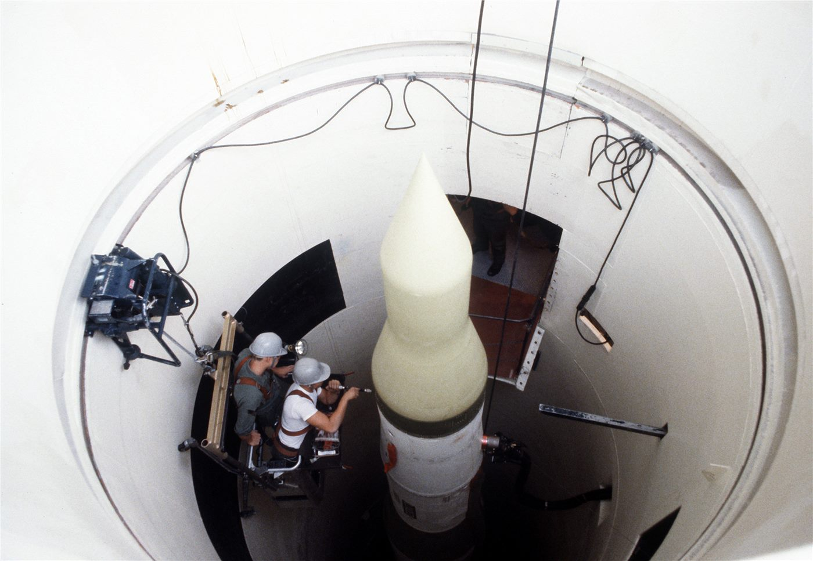

이란 공격으로 미군 2명 사망… 하메네이 “적에게 잊지 못할 교훈”
이란의 공격으로 미군 2명이 숨졌다. 아야톨라 하메네이 이란 최고지도자는 “적에게 잊을 수 없는 교훈을 줄 것”이라고 밝혀, 중동의 긴장이 한층 고조되고 있다.
정가호 기자 · 2026.07.20
橋국제

경향신문은 이란의 공격으로 미군 2명이 사망했으며, 하메네이 최고지도자가 강경 발언을 내놓았다고 전했다. 그는 적을 향해 “잊을 수 없는 교훈을 주겠다”고 언급했다.
광고 문의 · 300×250이번 사태는 미국과 이란 사이의 군사적 충돌이 실제 인명 피해로 이어졌다는 점에서 중대한 국면이다. 사망자가 발생하면서 양측의 대응 수위가 어디까지 올라갈지 국제 사회가 촉각을 곤두세우고 있다.
중동 정세는 최근 유가와 해상 물류에도 직접적인 영향을 미쳐 왔다. 무력 충돌이 확대될 경우 지역을 넘어 세계 경제 전반의 불확실성이 커질 수 있다는 우려가 나온다.
국제 사회는 확전 방지와 외교적 해법을 촉구하고 있다. 그러나 강경 대치가 이어지는 국면에서 대화의 공간이 좁아지고 있다는 진단도 함께 제기된다.
華橋時報는 특정 국가의 입장을 편들지 않으며, 무력 충돌로 인한 인명 피해에 우려를 표한다. 어떤 명분에서도 사람의 생명이 우선한다는 원칙 아래, 긴장 완화와 대화의 회복을 바란다.
출처·참고 (사실 확인용 — 본문은 직접 재작성)
· 경향신문
· 경향신문